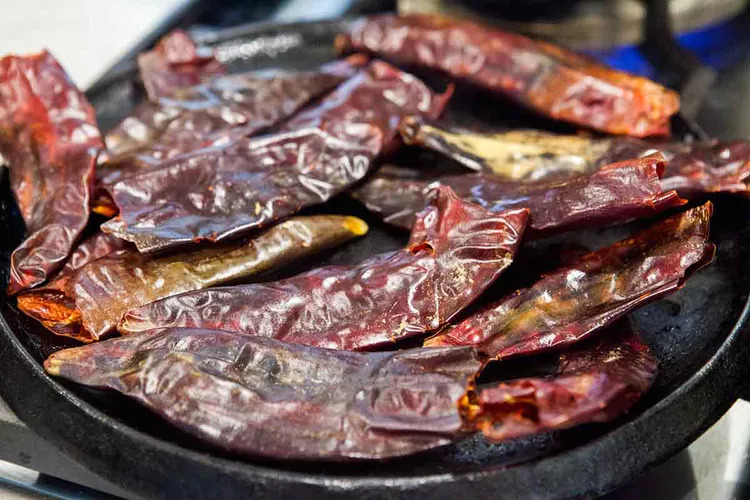
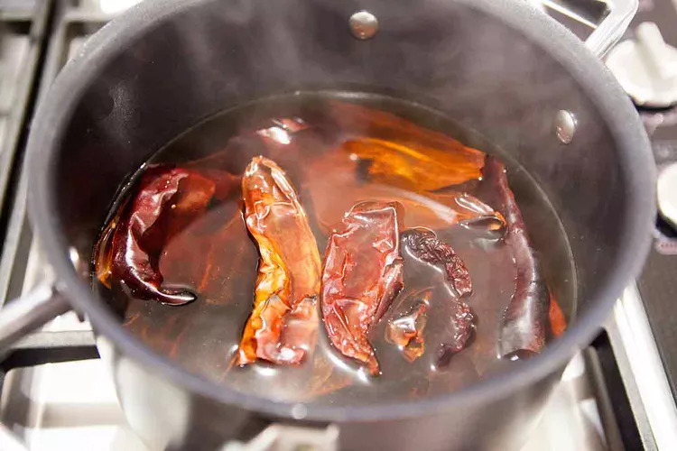
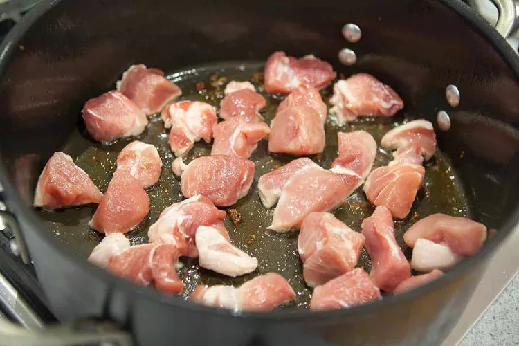
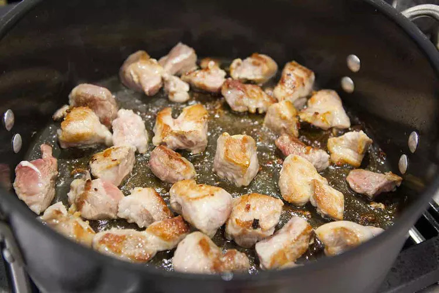
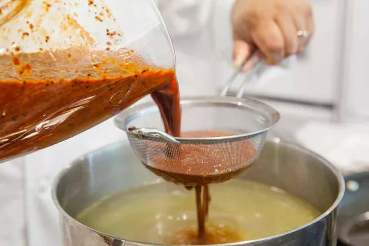
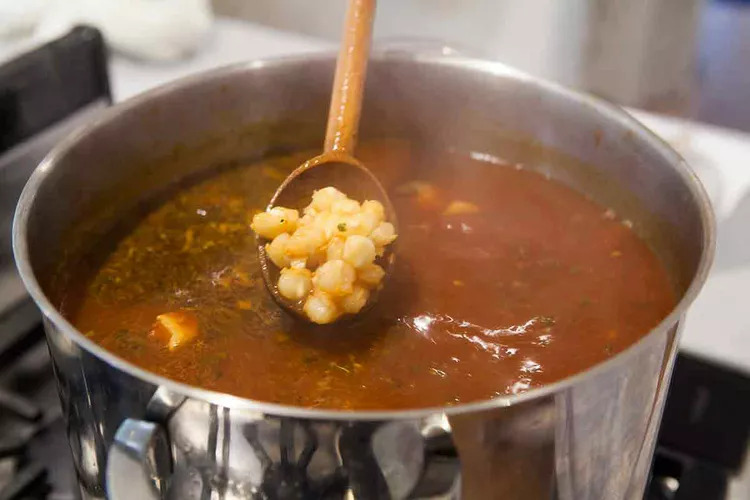

Cuisine Recipes
Unlocking the world's flavors, one recipe at a time.
American Cuisine
Mexican Cuisine

Pozole Rojo
Pozole Rojo is a traditional Mexican soup made with pork and hominy (dried maize kernels that have been treated with an alkali solution to remove the hull and soften the kernels). The soup is flavored with a blend of spices and chili peppers, giving it a rich and complex taste. The dish is often served at celebrations and special occasions, and it's a staple of Mexican cuisine.
View RecipeMenudo
Mexican Menudo is a hearty soup made with tripe (beef stomach lining), hominy (dried maize kernels), and a flavorful red chili pepper broth. The dish is often enjoyed as a traditional breakfast or brunch food, and it's believed to be a hangover cure.
View RecipeEnchiladas
Enchiladas are a popular Mexican dish made by filling tortillas with a variety of ingredients such as meat, cheese, beans, or vegetables, then rolling them up and topping them with a flavorful sauce. The tortillas are usually dipped in the sauce before being filled to give them extra flavor and to soften them up.
View RecipeItalian Cuisine
Japanese Cuisine
American Cuisines
American cuisine is diverse and has many regional variations, reflecting the country's melting pot of cultures and history. Some popular American dishes include beef brisket, a slow-cooked and tender cut of beef often served with barbecue sauce; tater tot casseroles, a comfort food made with ground beef, vegetables, and crispy tater tots; and honey chicken wings, a sweet and sticky finger food that's popular at parties and sports events. These dishes are just a few examples of the many delicious and iconic foods that make up American cuisine.
Texas Style Beef Brisket
Texas-Style Beef Brisket is a mouth-watering dish that is a staple of Texan cuisine. It is made from a well-marbled cut of beef, slow-cooked over low heat with a blend of spices and smoky wood until it becomes tender and juicy. The result is a flavorful and satisfying meal that is perfect for any occasion, whether it's a backyard barbecue, a family dinner, or a special event. This recipe is a must-try for any meat lover who wants to experience the authentic taste of Texas-style barbecue.
Ingredients
- 3 tablespoons Worcestershire sauce
- 1 tablespoon chili powder
- 2 garlic cloves, minced
- 1 teaspoon celery salt
- 1 teaspoon pepper
- 1 teaspoon liquid smoke, optional
- 1 fresh beef brisket (6 pounds)
- 1/2 cup beef broth
- 2 bay leaves
- 1 medium onion, chopped
- 2 tablespoons canola oil
- 2 garlic cloves, minced
- 1 cup ketchup
- 1/2 cup molasses
- 1/4 cup cider vinegar
- 2 teaspoons chili powder
- 1/2 teaspoon ground mustard
Instructions
- In a large bowl or shallow dish, combine the Worcestershire sauce, chili powder, garlic, celery salt, pepper and, if desired, liquid smoke. Cut brisket in half; add to bowl and turn to coat. Cover and refrigerate overnight.
- Transfer beef to a 5- or 6-qt. slow cooker; add broth and bay leaves. Cover and cook on low for 6-8 hours or until meat is tender.
- For sauce, in a small saucepan, saute onion in oil until tender. Add garlic; cook 1 minute longer. Stir in the remaining ingredients; heat through.
- Remove brisket from the slow cooker; discard bay leaves. Place 1 cup cooking juices in a measuring cup; skim fat. Add to the barbecue sauce. Discard remaining juices.
- Return brisket to the slow cooker; top with sauce mixture. Cover and cook on high for 30 minutes to allow flavors to blend. Thinly slice beef across the grain; serve with sauce.
Tater Tot Casseroles
Tater Tot Casserole is a classic comfort food that's easy to make and sure to please a crowd. With layers of crispy tater tots, savory ground beef, and melted cheese, this hearty casserole is the ultimate combination of flavors and textures. Whether you're looking for a quick and easy weeknight dinner or a crowd-pleasing potluck dish, this Tater Tot Casserole recipe is the perfect choice. So grab your ingredients and get ready to whip up a delicious and satisfying meal!
Ingredients
- 3/4 pound bulk hot Italian sausage
- 3/4 pound lean ground beef (90% lean)
- 1 small onion, chopped
- 2 cans (10-1/2 ounces each) condensed cream of celery soup, undiluted
- 2 cups frozen cut green beans, thawed
- 1 can (15-1/4 ounces) whole kernel corn, drained
- 2 cups shredded Colby-Monterey Jack cheese, divided
- 1/2 cup 2% milk
- 1 teaspoon garlic powder
- 1/4 teaspoon seasoned salt
- 1/4 to 1/2 teaspoon cayenne pepper
- 1 package (32 ounces) frozen Tater Tots
Instructions
- In a Dutch oven, cook the sausage, beef and onion over medium heat until meat is no longer pink; drain. Add the soup, beans, corn, 1 cup cheese, milk, garlic powder, seasoned salt and cayenne. Transfer to 2 greased 11x7-in. baking dishes. Top with Tater Tots; sprinkle with remaining 1 cup cheese.
- Cover and freeze 1 casserole for up to 3 months. Cover and bake the remaining casserole at 350° for 40 minutes. Uncover and bake until bubbly, 5-10 minutes longer.
- To use frozen casserole: Thaw in the refrigerator overnight. Remove from the refrigerator 30 minutes before baking.
- Cover and bake at 350° for 50 minutes. Uncover and bake until bubbly, 5-10 minutes longer.
Sticky Honey Chicken Wings
These Sticky Honey Chicken Wings are the perfect appetizer or main dish for any occasion. The wings are coated in a sweet and tangy glaze made with honey, soy sauce, garlic, and ginger, which gives them a sticky and irresistible flavor. Whether you're hosting a party or just looking for a delicious and easy meal, these chicken wings are sure to be a hit. So fire up your oven or grill, get out your ingredients, and prepare to make a crowd-pleasing dish that will have everyone asking for the recipe.
Ingredients
- 1/2 cup orange blossom honey
- 1/3 cup white vinegar
- 2 tablespoon paprika
- 2 teaspoons salt
- 1 teaspoon pepper
- 4 pounds chicken wings
Instructions
- Combine honey, vinegar, paprika, salt and pepper in a small bowl.
- Cut through the 2 wing joints with a sharp knife, discarding wing tips. Add remaining wing pieces and honey mixture to a large bowl; stir to coat. Cover and refrigerate 4 hours or overnight.
- Preheat oven to 375°. Remove wings; reserve honey mixture. Place wings on greased 15x10x1-in. baking pans. Bake until juices run clear, about 30 minutes, turning halfway through.
- Meanwhile, place reserved honey mixture in a small saucepan. Bring to a boil; cook 1 minute.
- Remove wings from oven; preheat broiler. Place wings on a greased rack in a broiler pan; brush with honey mixture. Broil 4-5 in. from heat until crispy, 3-5 minutes. Serve with remaining honey mixture.
Mexican Cuisines
Mexican cuisine is known for its bold and vibrant flavors, diverse ingredients, and unique cooking techniques. It's a fusion of indigenous Mesoamerican and Spanish colonial cuisines, resulting in a rich and complex culinary tradition.
Three popular Mexican dishes that reflect this diversity are Menudo, Enchiladas, and Pozole. Menudo is a hearty soup made with tripe (cow stomach), hominy, and a spicy red chili broth. It's often served with lime wedges, chopped onions, and cilantro, and is a staple dish during celebrations and special occasions.
Enchiladas are tortillas filled with various ingredients, such as chicken, beef, cheese, or vegetables, and smothered in a rich chili sauce. They're typically topped with shredded lettuce, sour cream, and crumbled cheese, and can be served as a main dish or appetizer.
Pozole is a traditional soup made with pork or chicken, hominy, and a flavorful broth made with garlic, onion, and chili peppers. It's garnished with chopped onions, cilantro, radishes, and lime wedges and is commonly served during holidays and celebrations.
These dishes are just a few examples of the rich and varied cuisine of Mexico, which offers a wealth of flavors and culinary experiences.
Pozole Rojo
Pozole Rojo is a traditional Mexican soup made with pork and hominy (dried maize kernels that have been treated with an alkali solution to remove the hull and soften the kernels). The soup is flavored with a blend of spices and chili peppers, giving it a rich and complex taste. The dish is often served at celebrations and special occasions, and it's a staple of Mexican cuisine. The recipe can vary by region and family tradition, but the basic ingredients typically include pork shoulder, onion, garlic, oregano, cumin, and dried chili peppers. The soup is usually garnished with shredded cabbage, chopped onions, radishes, and lime wedges, and it's often served with tostadas or tortilla chips on the side. It's a hearty and flavorful dish that's perfect for cold weather or any time you're craving a comforting and satisfying meal.
Ingredients
- 4 ounces dried guajillo or ancho chiles, or a combination of both
- Salt
- 1 large (108 ounce, 6 lb 12 oz, 3 kg) can white hominy, drained and rinsed
- 3 pounds pork shoulder (preferably with bone), cut into 1 to 1 1/2 inch cubes (can also use pork shanks), make sure to use a cut well marbled with fat
- 8 cloves garlic, 4 cloves roughly chopped, and 4 whole cloves
- 3 bay leaves
- 1 teaspoon ground cumin
- 2 tablespoons dry oregano (Mexican oregano if available)
Garnishes (can prep while pozole is cooking)
- 1/2 small cabbage, thinly sliced
- 1 bunch cilantro, chopped
- 1/2 white onion, chopped
- 2 avocados, chopped
- 4 limes, quartered
- 1 bunch red radishes, sliced thin
- 12 to 24 tostada shells
Instructions
- Fill a large 10-12 quart stockpot with 5 quarts of water. Set on heat to bring to a boil while you proceed with the next steps
- Remove and discard the stems, seeds, and large veins from the chili pods. Heat a cast iron pan on medium high and heat the chili pods for a couple minutes, until they begin to soften. Do not let them burn  
- While the chilies are heating, bring a medium pot with 3 cups of water to a simmer and remove from heat. Once the chiles have softened, add the chiles to the pot hot water and cover. Let the chiles soak in the hot water for 15 to 20 minutes.
- Heat a tablespoon or two of olive oil (enough to coat the bottom of the pan) in a large sauté pan on medium high heat. Pat the pork pieces dry with paper towels. Sprinkle them generously with salt.
- Working in batches, taking care not to crowd the pan or stir the meat much, brown the meat on all sides.  
- Right at the end of browning the meat, add 4 cloves of roughly chopped garlic to the pan with the meat, let cook with the meat for about a minute.
- Once the meat has browned, transfer it to the large stockpot of boiling water. Scrape up any browned bits at the bottom of the pan, and any garlic, and add those to the pot as well. Add the rinsed hominy.
- Add bay leaves, cumin, and oregano. When you put the oregano in, smoosh together with your hands so that the oregano breaks up more as it goes in. Add a tablespoons of salt. Bring to a simmer, reduce the heat and cook for 15 minutes.
- by puréeing in a blender the chilies, 2 1/2 cups or so of their soaking liquid, a teaspoon of salt, and 4 cloves of garlic. (To prevent the blender from creating too much pressure, it's probably best to start with the chiles and garlic and only a cup of the liquid in the blender, and then adding the rest of the liquid.)
- Strain the red sauce through a sieve, discarding the tough bits of the sauce.  
- Add another couple teaspoons of salt. Return to a simmer, lower the heat to just high enough to maintain a simmer, partially covered.
- Skim away excess fat. Taste for seasoning and add more salt to taste (you will likely need more than you expect, perhaps a tablespoon or more.) The resulting soup should be rather brothy, as you will be adding a lot garnishes. Add more water if necessary.
- When getting ready to serve the pozole, you can prep the garnishes (slice the cabbage, chop the cilantro, etc.). To serve, arrange the garnishes in bowls on the table and serve the pozole soup into bowls. Let your guests pick and choose which garnishes they would like on their pozole.
- Serve with tostada shells (or tortilla chips if you can't find tostada shells).
Menudo
Mexican Menudo is a hearty soup made with tripe (beef stomach lining), hominy (dried maize kernels), and a flavorful red chili pepper broth. The dish is often enjoyed as a traditional breakfast or brunch food, and it's believed to be a hangover cure. The tripe is first cleaned and cooked until tender, then the broth is made by blending dried chili peppers, garlic, and other spices. The hominy is added to the soup along with the tripe and simmered until the flavors meld together. The soup is typically garnished with chopped onions, cilantro, and lime wedges, and served with tostadas or tortillas on the side. Menudo is a beloved and iconic dish in Mexican cuisine, and it's known for its rich and spicy flavor and its ability to warm you up from the inside out.
Ingredients
- 1 1/2 gallons water
- 3 lbs lean beef tripe, cut into pieces
- 1 onion, quartered
- 4 garlic cloves
- 1 bay leaf
- 1 can (14.5 ounces) cooked hominy or cacahuazintle corn
- 15 New Mexico dried red chili peppers
- 6 garlic cloves
- 1/2 teaspoon cumin
- 1/2 teaspoon oregano
- Salt and pepper to taste
Instructions
- In large pot (2 gallons), place the water over medium-low heat. Add the beef tripe, onion, 4 garlic cloves and bay leaf and cook for 2 hours. Make sure the beef tripe is tender and not overcooked.
- To make the sauce: Remove stems from the chilies and soak in hot water for 12-24 hours, until soft.*
- Blend the chilies, 6 garlic cloves, cumin, and oregano with a cup of the liquid in which the chilies were soaked. Strain. Season with salt and pepper to taste.
- Add the hominy or corn and the chili sauce and let it boil for 10 minutes to incorporate the chili sauce with the rest of the ingredients.
- Serve in a soup dish with onions, oregano and fresh lemon juice to taste.
- *To speed up the process, bring the chiles to a quick boil for 10 minutes, remove from the stove, cover, and let rest for an hour or until they are no longer too hot to blend.
Enchiladas
Enchiladas are a popular Mexican dish made by filling tortillas with a variety of ingredients such as meat, cheese, beans, or vegetables, then rolling them up and topping them with a flavorful sauce. The tortillas are usually dipped in the sauce before being filled to give them extra flavor and to soften them up. Enchilada sauces can vary in color and flavor depending on the region and personal preference, but they often include chili peppers, tomatoes, garlic, and spices. The filled and sauced enchiladas are then baked in the oven until the cheese is melted and bubbly. They are typically served hot and garnished with toppings such as chopped onions, cilantro, and sour cream. Enchiladas are a delicious and comforting dish that's perfect for a family dinner or a fiesta with friends.
Ingredients
- 2 tablespoons canola oil
- 2 tablespoons all-purpose flour
- One 28-ounce can enchilada or Mexican red sauce
- 2 cups chicken broth
- 1/2 teaspoon salt
- 1/2 teaspoon black pepper
- 1 pound ground beef
- 1 medium onion, finely chopped
- 1/2 teaspoon salt
- Canola oil, for frying
- 10 to 14 corn tortillas
- Two 4-ounce cans diced green chilies
- 1 cup chopped green onions
- 1/2 cup chopped black olives
- 3 cups grated sharp Cheddar cheese
- Cilantro, for garnish
Instructions
- In a saucepan over medium-low heat, combine the canola oil and flour. Whisk together and allow to bubble for 1 minute. Pour in the red sauce, chicken broth, salt and pepper. Bring to a boil. Reduce the heat and simmer while you prepare the other ingredients.
- While the sauce is simmering, brown the ground beef with the onions in a large skillet over medium-high heat. Drain the fat, add the salt and stir to combine. Turn off the heat and set aside.
- In a small skillet over medium heat, heat some canola oil. Lightly fry the tortillas just until soft. Do not crisp. Drain on a paper towel-lined plate. Repeat until all the tortillas have been fried.
- Preheat the oven to 350 degrees F.
- Spread 1/2 cup of the sauce in the bottom of a 9- by 13-inch baking dish. Next, one at a time, dip each tortilla into the sauce. Set the sauce-soaked tortilla on a plate. Place on some of the meat mixture, chilies, green onions and black olives. Top with a generous portion of grated Cheddar. Roll up the tortilla to contain the filling inside.
- Place the tortilla seam side down in the baking dish. Repeat with the rest of the tortillas and pour the remaining sauce over the top. End with a generous sprinkling of cheese and any other bits of chiles, green onions or olives you have left over from the filling.
- Bake the enchiladas for 20 minutes, or until bubbly. Sprinkle chopped cilantro over the top and serve.
Italian Cuisines
Italian cuisine is one of the most beloved and popular cuisines in the world. It is known for its fresh, high-quality ingredients, simple yet flavorful dishes, and regional diversity. Italian cuisine varies greatly from region to region, with each region having its own unique style and specialties. Some of the most well-known Italian dishes include pizza, pasta, risotto, and various meat and fish dishes. Italian cuisine also features a wide range of cheeses, cured meats, breads, and wines. Overall, Italian cuisine is known for its emphasis on fresh, quality ingredients, simple cooking techniques, and delicious flavors.
Chicken Parmesian
Chicken Parmesan, also known as Chicken Parmigiana, is a popular Italian-American dish that consists of breaded chicken cutlets that are typically pan-fried, topped with tomato sauce, mozzarella cheese, and Parmesan cheese, and then baked in the oven until the cheese is melted and bubbly. The dish is often served over spaghetti or other pasta, and may also be accompanied by a side salad or vegetables. Chicken Parmesan is a hearty and satisfying dish that has become a staple in many Italian-American households and restaurants.
Ingredients
- 6 boneless skinless chicken breasts
- 1 cup flour
- 3 eggs
- 3 TB cream (milk or water will work to - I used thinned down sour cream)
- Salt & black pepper to taste
- 1/4 cup minced flat leaf parsley
- 1 ½ cup breadcrumbs
- 1 cup freshly grated parmesan cheese
- 1/2 cup olive oil
- 1 quart Marinara Sauce see my recipe
- 2 cups grated/shredded whole milk mozzarella
Instructions
- Pre-heat oven to 350.
- Place one chicken breast inside a gallon size ziplock bag. Using the smooth side of a kitchen mallet pound the chicken breast to an even size all around, approximately ½ inch. Take out and set aside. Pound the rest of the chicken breasts.
- Prepare three trays for the breading process. Put the flour in tray number 1 and season with salt and pepper. In a small bowl, beat three eggs with the cream. Pour eggs into tray number 2. Add salt, pepper and ½ of the minced parsley to the eggs. Add the breadcrumbs to tray number 3. Mix in the parmesan cheese.
- To bread, dredge each breast in the flour on both sides, dip in the egg wash, and finally cover with breadcrumbs. Set aside and finish breading the rest of the cutlets.
- Heat olive oil in large skillet until very hot. Cook two cutlets at a time. Turn when start to get a golden color and cook on the other side. They will cook fast on the outside, and finish cooking in the oven. Drain on a paper towel and finish frying the rest of the cutlets.
- Add 4 big spoonfuls of Marinara sauce to the bottom of large lasagna pan or baking pan. Arrange the cutlets in a single layer or slightly overlapping. Add a spoonful of Marinara sauce over each cutlet and around sides. Sprinkle the mozzarella cheese over the cutlets, and finish with the rest of flat leaf parsley.
- Bake for 25-35 minutes until the cheese is starting to turn golden brown. The time will vary depending on the size of the cutlets.
- Serve immediately.
Cheesy Florentine Pasta
Cheesy Florentine Pasta, also known as Spinach and Ricotta Pasta, is a delicious Italian dish that originates from the city of Florence in Tuscany, Italy. The dish typically consists of pasta, such as fettuccine or penne, that is cooked until al dente, and then combined with a mixture of ricotta cheese, spinach, garlic, and seasonings. The pasta is then baked in the oven with a generous layer of melted cheese on top, usually mozzarella or Parmesan cheese. The result is a creamy and flavorful pasta dish that is hearty and satisfying. Cheesy Florentine Pasta is a popular vegetarian option that is easy to make and loved by many.
Ingredients
- 1 pound penne pasta
- 1 pound penne pasta
- 3 tablespoons unsalted butter
- 3 tablespoons flour
- 2 cups whole milk
- 1/2 teaspoon kosher salt
- 1/4 teaspoon coarse ground black pepper
- 1 cup mozzarella cheese
- 1/2 cup Parmesan cheese
- 4 cups fresh baby spinach
- 1/4 cup roasted peppers , sliced
Instructions
- Cook the pasta one minute shy of the directions listed on the box and drain (do not rinse).
- Add the butter to the pot you just used for the pasta (make sure to have at least rinsed it out well).
- Once melted add in the flour and whisk well, cooking for about a minute.
- Add in the milk slowly while whisking until smooth.
- Add in the salt, pepper, mozzarella and Parmesan cheese and whisk well.
- Add the pasta back in and toss well.
- Add in the spinach and bell peppers and toss a bit more before serving.
Pasta Alla Norma
Pasta alla Norma is a classic Italian pasta dish that originates from the island of Sicily. It typically consists of pasta, such as rigatoni or spaghetti, tossed with a tomato-based sauce, fried eggplant, fresh basil, and ricotta salata cheese. The name "alla Norma" is said to come from the Italian word "normale," which means normal or traditional, as the dish is considered a classic and traditional Sicilian recipe. Pasta alla Norma is a flavorful and hearty dish that is loved by many for its combination of tangy tomato sauce, crispy eggplant, and creamy ricotta cheese. It is a popular vegetarian option that is easy to make and perfect for any occasion.
Ingredients
- 1 batch Super Simple Marinara Sauce, or 2 cups (16 ounces) store-bought marinara
- 2 medium eggplants (about 2 ¼ pounds total)
- 1/4 cup + 1 teaspoon extra-virgin olive oil
- 1/4 teaspoon fine salt, more to taste
- 8 ounces rigatoni, ziti or spaghetti
- 1/2 cup chopped fresh basil, plus a handful more small basil leaves or torn leaves for garnish
- 1/2 to 1 teaspoon red pepper flakes, to taste (optional)
- 1/2 teaspoon dried oregano
- 3/4 cup (1.5 ounces) finely grated ricotta salata and/or Parmesan cheese
Instructions
- If making your own marinara: Cook the sauce per instructions. If it’s done cooking before you’re ready to assemble, cover the pot and keep it warm over very low heat. If youre using store-bought marinara, warm it in a pot over medium-low heat while you cook the pasta.
- Meanwhile, preheat the oven to 425 degrees Fahrenheit with racks in the upper and lower thirds of the oven. Line two large, rimmed baking sheets with parchment paper for easy cleanup.
- Use a vegetable peeler to shave off long alternating strips of eggplant peel. The eggplants will look striped like zebras when you’re done. Then slice the eggplants into ½-inch thick rounds, discarding the end pieces.
- Place the eggplant on the lined baking sheets. Brush the rounds with olive oil on both sides. Sprinkle the eggplant with the salt and plenty of pepper. Roast until deeply golden and tender, about 35 to 45 minutes, flipping after 20 minutes. Set aside.
- Bring a large pot of salted water to boil and cook the pasta until al dente, according to package directions. Reserve some pasta cooking water before draining (about ½ cup should be plenty), then return the pasta to the pot.
- When the eggplant is done and the marinara is finished cooking (or warmed through, if using store-bought), gently stir the roasted eggplant into the sauce. Add the remaining 1 teaspoon olive oil, fresh basil, red pepper flakes (skip if you don’t like spice, or load it up if you do). Crush the dried oregano between your fingers as you drop it in.
- Add the pasta to the sauce with a couple tablespoons of the reserved pasta cooking water, and gently stir it in. Add about two-thirds of the cheese, reserving the rest for garnish. Season to taste with additional salt (I usually add ¼ teaspoon more) and black pepper. You can add a bit more of the reserved pasta cooking water to loosen up the sauce, if desired.
- Divide the pasta between four bowls. Sprinkle the remaining cheese on top of the individual servings, followed by some extra fresh basil. For added richness, drizzle the servings lightly with olive oil. Enjoy! Leftover pasta will keep well in the refrigerator, covered, for 4 to 5 days.
Japanese Cuisines
Japanese cuisine is a unique and diverse culinary tradition that is known for its emphasis on fresh and seasonal ingredients, precise preparation techniques, and beautiful presentation. Some popular Japanese dishes include sushi, ramen, tempura, teriyaki, and udon noodles. Japanese cuisine also features a wide variety of seafood, rice dishes, and pickled vegetables. Many Japanese recipes incorporate ingredients like soy sauce, miso, and mirin, which add a distinctive umami flavor to dishes. In addition, Japanese cuisine has a strong emphasis on healthy eating, with many dishes featuring fresh vegetables, seafood, and lean proteins. Overall, Japanese cuisine offers a unique and delicious culinary experience that is loved by people all around the world.
Omurice
Omurice is a popular Japanese dish that is a combination of omelet and fried rice. It typically consists of a fluffy omelet that is filled with fried rice and often topped with ketchup. The fried rice is usually cooked with a variety of vegetables and proteins, such as onions, carrots, peas, chicken, or ham. Omurice is a delicious and filling dish that is popular in Japan as a comfort food and is often served in casual restaurants and cafes. It is also a popular dish for home cooking and is loved by many for its unique combination of textures and flavors.
Ingredients
- 100 g onion
- 50 g carrot
- 50 g green pepper
- a dash white wine
- 380 ml tomato juice
- 4 tbsp tomato ketchup
- 1 chicken stock cube
- 2 tbsp sugar
- 30 g butter
- 30 g wheat flour
- 500 g cooked rice
- 1 tbsp cooking oil
- 120 g chicken thighs
- 1 bunch pak choi (Chinese cabbage)
- 2 onions
- 2 raw shiitake
- 8 eggs
- salt and pepper, to taste
- tomato ketchup, to taste
- 1 tbsp white wine
- 6 ml soy sauce
- 9 ml Japanese rice wine
Instructions
- Start with preparing the sauce. Peel the onions and the carrots, and remove the seeds from the peppers. Chop the vegetables into small pieces.
- Sauté the vegetables shortly. Then, add white wine, tomato juice, tomato ketchup, chicken stock cube, and sugar.
- Dissolve the kudzu in a little bit of water. Instead of kudzu, you can also thicken the vegetable sauce with a roux: simply melt the butter in a small saucepan, and stir in wheat flour. Fry the roux shortly, and set aside.
- When the vegetable sauce starts boiling, add the roux or kudzu. This way, the sauce will become thick. Season with salt and pepper to taste – if the tomato juice is salted, adding salt may not be necessary. Set the sauce aside.
- Now, prepare the omurice filling. Cut the chicken thighs into small, 1-cm cubes. Pre-boil pak choi. Chop the onions and the shiitake finely. Whisk the eggs. In a small bowl, mix the ingredients for seasoning (white wine, soy sauce, and rice wine).
- In a large frying pan, warm up 1 tbsp of cooking oil and quickly fry the chicken. Drizzle with a little bit of whisked eggs – this will soak up excess liquid. Add shiitake and onion and stir-fry over medium heat. Stir in cooked rice, boiled pak choi, salt, pepper, and some of the seasoning sauce. Finally, add ketchup, stir again, and remove from heat.
- Next, fry the eggs. Prepare another large frying pan and heat some cooking oil in it. Pour in whisked eggs – usually, two whisked eggs make one serving. Stir the eggs with chopsticks until they are halfway cooked. Then, put 1/4 of the filling into the middle of the omelet, flatten out, and turn off the heat.
- Finally, fold the omurice: fold the sides of the omelet so they partially cover the filling. Tilt the frying pan and the serving plate, so they form a letter V. Slowly slide the omurice onto the plate, turning it over simultaneously.
- Garnish with some vegetable sauce and serve.
Pork Tonkatsu
Pork Tonkatsu is a popular Japanese dish that consists of a breaded and deep-fried pork cutlet. The word "Tonkatsu" literally means "pork cutlet" in Japanese. The pork cutlet is typically coated in flour, beaten egg, and panko breadcrumbs, and then deep-fried until golden brown and crispy. Tonkatsu is often served with a side of shredded cabbage, rice, and a tangy Tonkatsu sauce, which is made from Worcestershire sauce, ketchup, soy sauce, and other seasonings. Pork Tonkatsu is a satisfying and flavorful dish that is popular in Japan as a casual meal and is also served in specialty Tonkatsu restaurants. It has gained popularity in other parts of the world and is now enjoyed by many as a delicious and filling dish.
Ingredients
- 4 slices pork loin or tenderloin, each about 1/2-inch thick and 5 ounces
- Salt and freshly ground black pepper
- Flour for dredging
- 2 eggs, lightly beaten
- 2 cups panko (bread crumbs)
- Vegetable oil for pan frying
- Shredded Napa cabbage, for serving
- Lemon wedges, for garnish
- Tonkatsu sauce, for dipping
Instructions
- Slash the fat rimming one side of the loin cutlet to keep the meat from curling when deepfried. Pound to flatten to about 1/4 inch. Salt and pepper both sides of each cutlet. Dredge each in flour, then dip into beaten eggs and press into bread crumbs to coat both sides.
- Heat a large skillet with about 1/2 inch of oil until hot. Lay 1 or 2 cutlets in the hot oil. Deep-fry until golden brown, about 5 to 7 minutes, turning them once or twice.
- Drain the cutlets on paper towels and cut the pork into bite-size strips that can be eaten with chopsticks.
- Arrange the pork on a platter lined with the shredded cabbage, and garnish with lemon wedges. Serve the sauce on the side for dipping, or pour it over the pork and cabbage.
Chicken Yakisoba
Chicken Yakisoba is a popular Japanese noodle dish that typically consists of stir-fried noodles, chicken, and vegetables. Yakisoba literally means "fried noodles" in Japanese. The dish is typically made with thin, wheat-based noodles that are stir-fried with chicken, cabbage, onions, carrots, and bean sprouts. The dish is seasoned with a savory sauce made from soy sauce, Worcestershire sauce, and other seasonings. Chicken Yakisoba is a quick and easy dish to prepare, making it a popular choice for busy weeknights. It is often served as a main dish but can also be served as a side dish or appetizer. Chicken Yakisoba is loved by many for its delicious combination of savory flavors and textures.
Ingredients
- 1/2 head green cabbage
- 1 yellow onion
- 2 carrots
- 1 crown broccoli
- 1 inch fresh ginger
- 1 large chicken breast
- 2 Tbsp vegetable oil
- 2 3oz. packages ramen noodles, seasoning packets discarded
- 1 tsp sesame oil, optional
- 1/4 cup soy sauce
- 1/4 cup worcestershire sauce
- 2 Tbsp ketchup
- 1 Tbsp sriracha
- 1 Tbsp sugar
Instructions
- Before you begin, prepare the meat and vegetables for stir frying. Peel the ginger with either a vegetable peeler or the side of a spoon and then grate it with a cheese grater. Peel and grate the carrots with a large holed cheese grater. Remove the core from the cabbage and cut into thin strips. Slice the onion into thin strips. Cut the broccoli into bite-sized pieces. Slice the chicken into thin strips.
- Begin boiling a medium pot full of water for the noodles. Heat the vegetable oil in a large skillet over medium-high heat. When the oil is hot, add the grated ginger, saute for about 30 seconds to one minute (its okay if it sticks to the pan but don’t let it burn). Add the chicken strips and cook until they are no longer pink (about five minutes).
- Once the chicken is cooked through, add all of the vegetables. Stir and cook until wilted (about 5-10 minutes). Meanwhile, once the water boils, add the noodles and cook just until tender (2-3 minutes). Drain, return to the pot (with the heat turned off) and toss with the sesame oil to keep from sticking.
- In a small bowl, combine the soy sauce, worcestershire sauce, ketchup, sriracha, and sugar. Use only 1/2 tsp of sriracha if you don’t want it spicy, use up to 1 Tbsp if you like it hot. Stir until the ketchup and sugar are dissolved. Pour the sauce into the skillet with the chicken and vegetables with the heat still on medium high. Add the noodles, stir to coat everything in the sauce, and heat through (just a few minutes).
Developer: Angelo Angel